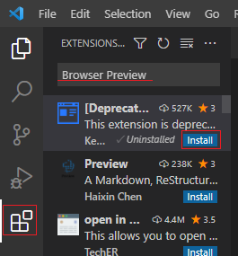
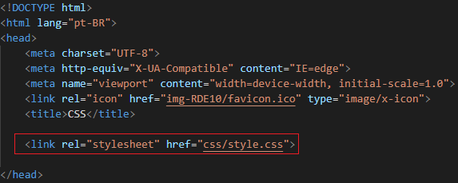

Cascading Style Sheets (CSS) – Folhas de Estilo em Cascata – tem por objetivo realizar a estilização de conteúdo de documentos HTML. Podem definir cores, fontes, espaçamento dentre outros.
Quando criamos um site...


Observações:
Exemplo:
Vai procurar todos os p do documento HTML e mudar a cor do parágrafo para azul, além de alinhar na posição centralizada o texto...

Há três formas de utilizar o CSS:
Os códigos CSS são definidos dentro de uma tag HTML. Afetam somente a tag em que foi definida.
Os códigos CSS são definidos no cabeçalho, dentro da tag head. Afetam somente o documento em que foi definido.
Os códigos CSS são definidos em um arquivo externo. Afetam todos os documentos que estão linkados ao CSS.
Exemplo:
Se tiver várias tags h2, necessitará na forma Inline, colocar a estilização CSS em cada h2, já no Incorporado não.
No VScode...
Adicionar a extensão Browser Preview, para observar de que modo as alterações realizadas no VSCode aparecem no navegador...

Após instalado, clicar...

Abrir o arquivo HTML com a Extensão Live Server já estudada, copiar o endereço e colar...

Para envolver o conteúdo com as tags HTML basta, selecionar o texto, clicar no teclado em Ctrl + shift + p após, clica em Quebrar Linha com Abreviação e digita a tag desejada.
No VSCode...

Como aparece quando o abre o documento HTML em um navegador...

Observações:
Mudar a cor do fundo e fontes...
No VSCode...

Observação:
Como aparece quando o abre o documento HTML em um navegador...

No VSCode, dentro da tag head...

Como aparece quando o abre o documento HTML em um navegador...

Vantagem: haverá um arquivo de conteúdo HTML e um arquivo do código CSS para estilização.
Primeiramente, dentro da tag head...

Após, no css/style.css apertar no Ctrl e clicar em cima...

Clicar em Create File...
Nesse novo arquivo, por exemplo...
No VSCode...

Como aparece quando o abre o documento HTML em um navegador...